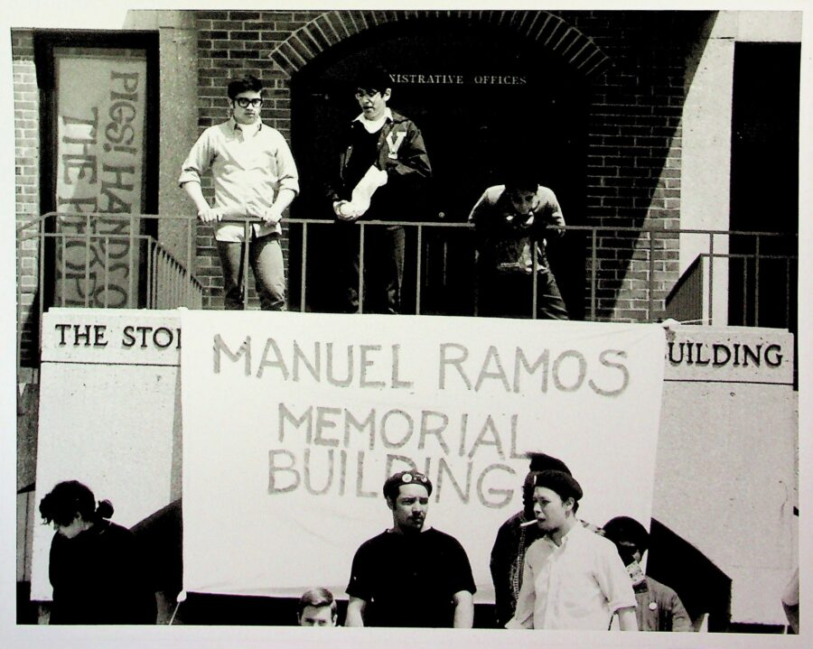

The Young Lords Speak: Conversation and Celebration
Join us for an evening of reflection and celebration centered on the enduring impact of the Young Lords Organization. Guest curator and DePaul professor Dr. Jacqueline Lazú will moderate a conversation featuring original Young Lord Omar López, muralist John Weber, artist Ricardo Levins Morales, and designer Areli Lupercio. From posters and photography to political art and graphic design, each panelist has contributed to how the movement is remembered and reimagined. Together, they will explore how a group of Puerto Rican youth in Chicago became one of the most influential community organizations of the 20th century through a visual language that continues to shape its public memory.
This program is supported by DePaul University’s Vincentian Endowment Fund through the Division of Mission and Ministry and the Center for Latino Research.
Image credits: Luis Arévalo, Young Lords at McCormick Seminary, May 1969. McCormick Theological Seminary Collection, Special Collections and Archives, DePaul University Library, Chicago, Illinois.